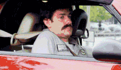

Freshman year of College (last year) second semester all photo students are required to take a photoshop one class. I love editing photos it's fun to me so I was excited. I was a little more confident on the first day of photoshop because I knew my way around FIT now, I was ready. My classmates and I stood outside the door to the classroom talking waiting for it to be unlocked. I knew most of the people around us but there was one student walking towards us I was still unsure about. But he didn't turn into our class so I wasn't worried about it. I had a water and my friend Grace had a tea. So we go to go in but the women who let us in tells us drinks aren't allowed so we have to go and finish them outside the classroom before we can sit down. I had a sip left it was no big deal Grace had a few sips left and so we leave the area and start drinking around a trash can. The student I had seen before that I didn't recognize was there too with a coffee or something which Grace and I joked with him saying
"You got caught too yeah?" So we stand there Grace and I are talking about the photoshop class wondering what it's going to be like we finish before the guy that's awkwardly just listening to us converse on the side. We head in sit down and a few moments later the same student who had coffee too walks in and Grace and I were both confused because we've never seen the guy. But then he does something we both really weren't expecting and he sits down at the professor's desk. To say it was shocking would be an understatement. I was near positive this guy was attending FIT. Maybe a TA, but before I could even think that was an option he says "Hi I'm your professor." I was rather embarrassed with what I was saying outside and him acknowledging that he totally heard us talking about the class he knew he was teaching. Which not only explained why he was acting so strange but why he looked so confused that we were talking to him as an equal. Grace and I are ducking a bit looking at each other wondering how in the name of ansel adams we have gotten ourselves into this complete photo desaster. So of course to ease the tension, I decide to crack a joke. I have very...dry humor. Also my sarcasm sometimes isn't understood mostly because I have a very monotoned voice in general. So I turn to my other friend, there is a slight murmur over the room, I'm in the back in the clear from this guy, I whisper to her
"This guy looks twelve." to which I heard
"I can hear you, you know." If him looking me dead in the eyes didn't give away that I was in fact the person who said that fateful statement, maybe the fact that I had whipped my head to him, I was crimson, and ducking really quickly did. Grace is now in the clear from him ever thinking poorly of her and I've just made the worst first impression of my life. Of COURSE I was exaggerating how young he looked to be funny and of course it is at times a compliment maybe if you're a woman. But this was my professor, the man who would critique me grade my photos. My soul left my body that first day and his laser vision annihilated all my hopes and dreams. Needless to say we were cool at the end of the semester, and he made me guess his real age as he wouldn't tell the people who inquired. I told him he knew I wasn't good at this age thing as we had established in january, he laughed, and now he starts the first day of class by saying
"Yes I am your professor, no I am not 12."
Visual of me that day:
